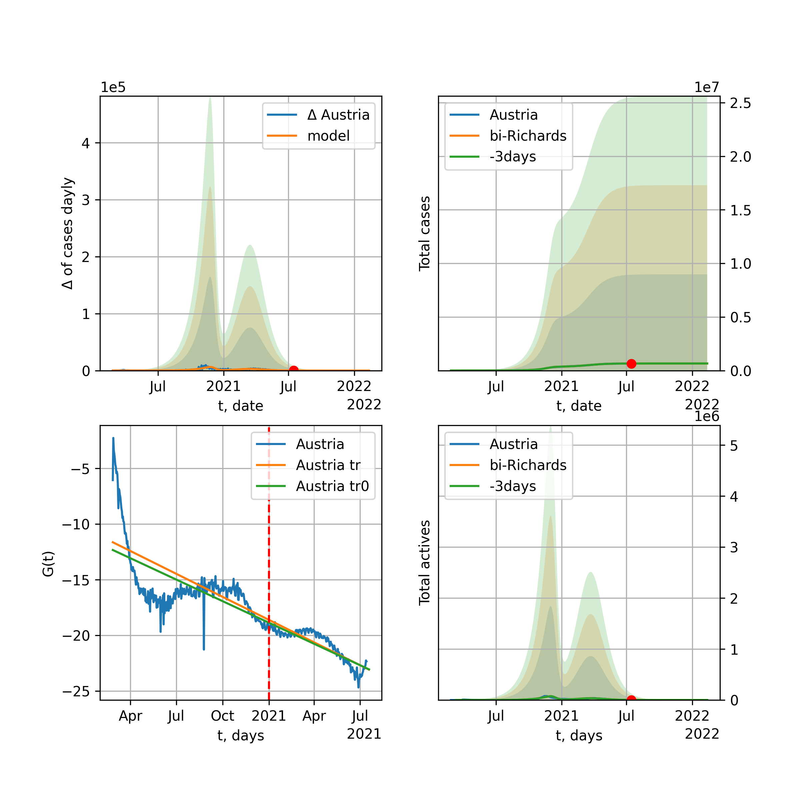
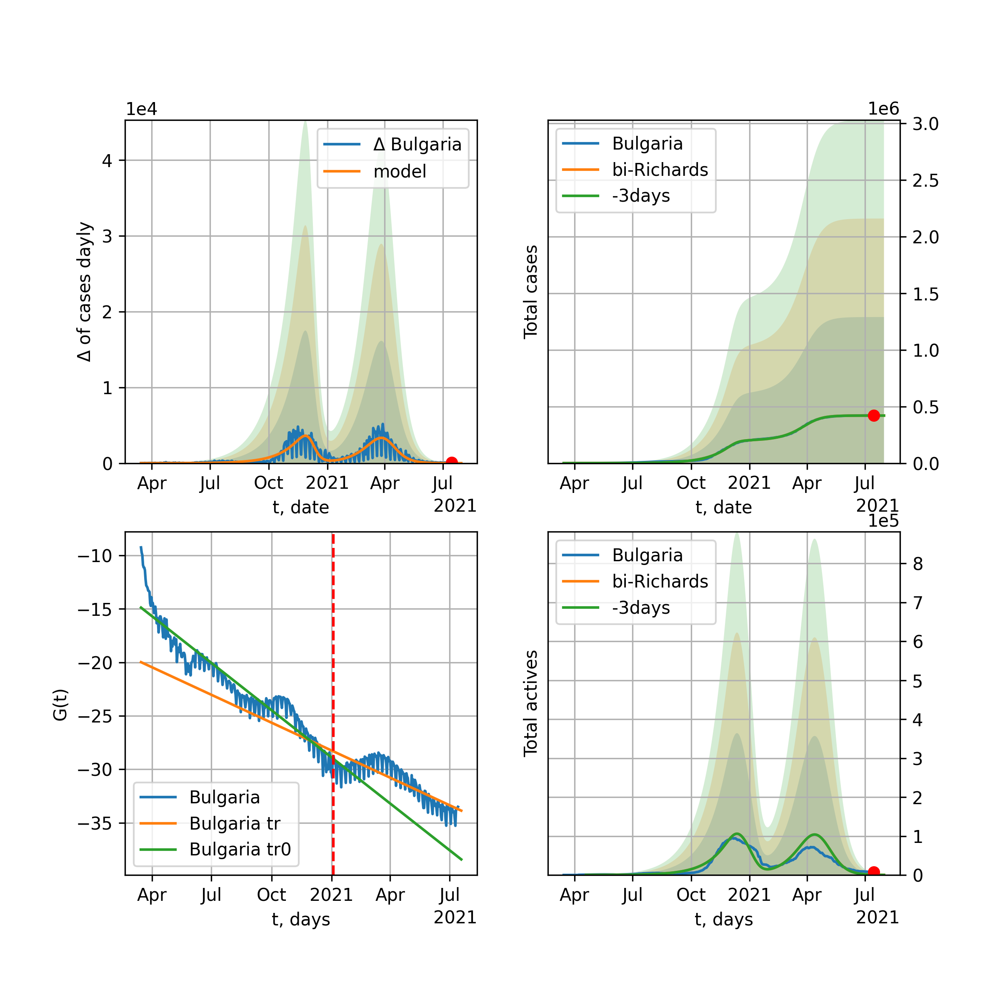

Multi-logistic model of COVID-19 dynamics
Model, code, results
Project maintained by algmaknick Hosted on GitHub Pages — Theme by mattgraham
World

World data at: 2020-06-16
+3 day model MAPE: 0.005473
model: bi-Richards
coeffs: [ 9.31034255e+06 2.03874796e+00 -3.44209323e+01 1.63805595e-02]
S.Korea scenario coeffs: [0.36242246, 2.56241634, 1.84890887, 0.13324732]
rational stdev: 0.084315
forecast at the end of period: +550 days
deltaDaycases: 5091
total cases: 17306728 ± 1459211
total death: 934257 ± 236314
bi-Richards approximation splitting point: 50
trend coefficient of determination: 0.841739
intercept: -2.309776
slope: -0.033494
trend coefficient of determination: 0.477941
intercept: -3.669039
slope: -0.007625
European Union

European Union data at: 2020-06-16
+3 day model MAPE: 0.004025
model: bi-Richards
coeffs: [ 1.95570561e+05 5.12442009e+00 -2.28037503e+01 9.14714143e-03]
rational stdev: 0.600167
forecast at the end of period: +32 days
deltaDaycases: 662
total cases: 1263781 ± 758479
total death: 134031 ± 241322
bi-Richards approximation splitting point: 83
trend coefficient of determination: 0.943409
intercept: -1.112065
slope: -0.057404
trend coefficient of determination: 0.022119
intercept: -5.354964
slope: -0.005475
Brazil

Brazil data at: 2020-06-16
+3 day model MAPE: 0.006187
model: logisticQ
coeffs: [ 1.47789722e+06 5.71568646e-06 9.07833093e+01 -1.23700703e+04]
S.Korea scenario coeffs: [0.35416971, 0.02606324, 4.35859408, 19.30413219]
rational stdev: 0.376879
forecast at the end of period: +410 days
deltaDaycases: 334
total cases: 1991944 ± 750722
total death: 97483 ± 110217
trend coefficient of determination: 0.912071
intercept_: -4.749033818068137
coeffs_: [ 0. -0.23078969 0.00112357]

Brazil data at: 2020-06-16
+3 day model MAPE: 0.020754
model: Richards
coeffs: [1.62760295e+06 7.45686892e-02 8.36043865e+01 8.30375410e-01]
S.Korea scenario coeffs: [0.36242246, 2.56241634, 1.84890887, 0.13324732]
rational stdev: 0.335111
forecast at the end of period: +480 days
deltaDaycases: 16
total cases: 2216699 ± 742840
total death: 108482 ± 109060
trend coefficient of determination: 0.834701
intercept: -7.223987
slope: -0.085612
Russia

Russia data at: 2020-06-16
+3 day model MAPE: 0.011402
model: Richards
coeffs: [ 7.20492208e+05 2.67129595e+00 -5.87782739e+01 1.46455065e-02]
S.Korea scenario coeffs: [0.36242246, 2.56241634, 1.84890887, 0.13324732]
rational stdev: 0.210808
forecast at the end of period: +550 days
deltaDaycases: 90
total cases: 974767 ± 205489
total death: 13016 ± 8231
trend coefficient of determination: 0.965830
intercept: -1.520320
slope: -0.033914
USA

USA data at: 2020-06-16
+3 day model MAPE: 0.006875
model: bi-Richards
coeffs: [ 1.18508315e+06 3.00162328e+00 -2.30410936e+01 1.35889516e-02]
rational stdev: 0.183781
forecast at the end of period: +144 days
deltaDaycases: 90
total cases: 2796255 ± 513899
total death: 150843 ± 83166
bi-Richards approximation splitting point: 65
trend coefficient of determination: 0.953154
intercept: -1.137994
slope: -0.051181
trend coefficient of determination: 0.643226
intercept: -3.359936
slope: -0.014747
Spain

Spain data at: 2020-06-16
+3 day model MAPE: 0.000492
model: Richards
coeffs: [ 2.93641690e+05 8.42140076e+00 -5.22438827e+01 7.21359188e-03]
S.Korea scenario coeffs: [0.36242246, 2.56241634, 1.84890887, 0.13324732]
rational stdev: 0.237181
forecast at the end of period: +270 days
deltaDaycases: 128
total cases: 393741 ± 93387
total death: 36665 ± 26088
trend coefficient of determination: 0.965723
intercept: -0.714248
slope: -0.060926
Italy

Italy data at: 2020-06-16
+3 day model MAPE: 0.000831
model: Richards
coeffs: [ 2.37942984e+05 7.40372063e+00 -5.60302628e+01 7.94901947e-03]
S.Korea scenario coeffs: [0.36242246, 2.56241634, 1.84890887, 0.13324732]
rational stdev: 0.077158
forecast at the end of period: +242 days
deltaDaycases: 169
total cases: 315339 ± 24330
total death: 45681 ± 10573
trend coefficient of determination: 0.983313
intercept: -1.127752
slope: -0.055353
United Kingdom

United Kingdom data at: 2020-06-16
+3 day model MAPE: 0.001230
model: Richards
coeffs: [ 3.18128388e+05 4.11819962e+00 -6.38011239e+01 1.12116735e-02]
S.Korea scenario coeffs: [0.36242246, 2.56241634, 1.84890887, 0.13324732]
rational stdev: 0.139816
forecast at the end of period: +340 days
deltaDaycases: 190
total cases: 420723 ± 58824
total death: 59225 ± 24841
trend coefficient of determination: 0.973890
intercept: -1.394299
slope: -0.045042
France

France data at: 2020-06-16
+3 day model MAPE: 0.000168
model: bi-Richards
coeffs: [2.04639159e+04 4.28208736e+00 2.80074725e+01 1.70021492e-02]
rational stdev: 0.187887
forecast at the end of period: +32 days
deltaDaycases: 45
total cases: 162698 ± 30568
total death: 30480 ± 17180
bi-Richards approximation splitting point: 82
trend coefficient of determination: 0.895133
intercept: -0.897712
slope: -0.068811
trend coefficient of determination: 0.013109
intercept: -7.187754
slope: 0.010470
Germany

Germany data at: 2020-06-16
+3 day model MAPE: 0.002938
model: Richards
coeffs: [ 1.83533736e+05 1.07930695e+01 -5.07600234e+01 6.96391834e-03]
S.Korea scenario coeffs: [0.36242246, 2.56241634, 1.84890887, 0.13324732]
rational stdev: 0.083759
forecast at the end of period: +172 days
deltaDaycases: 167
total cases: 243247 ± 20374
total death: 11505 ± 2890
trend coefficient of determination: 0.943114
intercept: -1.520070
slope: -0.058325
Turkey

Turkey data at: 2020-06-16
+3 day model MAPE: 0.014100
model: bi-Richards
coeffs: [ 4.54697831e+04 5.16292046e+00 -8.34131936e-01 1.02111728e-02]
rational stdev: 0.209018
forecast at the end of period: +46 days
deltaDaycases: 168
total cases: 203487 ± 42532
total death: 5434 ± 3407
bi-Richards approximation splitting point: 75
trend coefficient of determination: 0.777888
intercept: -0.971634
slope: -0.058031
trend coefficient of determination: 0.161855
intercept: -6.150116
slope: 0.010936
Iran

Iran data at: 2020-06-16
+3 day model MAPE: 0.002684
model: bi-Richards
coeffs: [1.45071222e+05 2.38411809e+00 1.39313266e+01 2.01839579e-02]
S.Korea scenario coeffs: [0.36242246, 2.56241634, 1.84890887, 0.13324732]
rational stdev: 0.276782
forecast at the end of period: +424 days
deltaDaycases: 70
total cases: 295704 ± 81845
total death: 13929 ± 11565
bi-Richards approximation splitting point: 75
trend coefficient of determination: 0.949203
intercept: -0.967592
slope: -0.055961
trend coefficient of determination: 0.072383
intercept: -4.087696
slope: -0.003508
Canada

Canada data at: 2020-06-16
+3 day model MAPE: 0.000755
model: Richards
coeffs: [ 1.10168157e+05 2.80073708e+00 -6.81463759e+01 1.50664946e-02]
S.Korea scenario coeffs: [0.36242246, 2.56241634, 1.84890887, 0.13324732]
rational stdev: 0.167531
forecast at the end of period: +420 days
deltaDaycases: 30
total cases: 147947 ± 24785
total death: 12216 ± 6139
trend coefficient of determination: 0.978013
intercept: -1.585570
slope: -0.044616
Belgium

Belgium data at: 2020-06-16
+3 day model MAPE: 0.001934
model: Richards
coeffs: [ 5.99306753e+04 5.77002838e+00 -4.38578095e+01 1.14370484e-02]
S.Korea scenario coeffs: [0.36242246, 2.56241634, 1.84890887, 0.13324732]
rational stdev: 0.567561
forecast at the end of period: +256 days
deltaDaycases: 18
total cases: 80805 ± 45862
total death: 12980 ± 22100
trend coefficient of determination: 0.960001
intercept: -1.269188
slope: -0.056471
Peru

Peru data at: 2020-06-16
+3 day model MAPE: 0.011385
model: Richards
coeffs: [ 5.07559852e+05 3.44248168e-01 -2.79253972e+00 8.32764951e-02]
S.Korea scenario coeffs: [0.36242246, 2.56241634, 1.84890887, 0.13324732]
rational stdev: 0.279064
forecast at the end of period: +760 days
deltaDaycases: 35
total cases: 687820 ± 191946
total death: 20464 ± 17132
trend coefficient of determination: 0.817396
intercept: -1.830908
slope: -0.032556
Netherlands

Netherlands data at: 2020-06-16
+3 day model MAPE: 0.001600
model: bi-Richards
coeffs: [5.20699088e+03 7.18312565e+00 3.30324223e+01 1.06517590e-02]
rational stdev: 0.135718
forecast at the end of period: +32 days
deltaDaycases: 20
total cases: 51273 ± 6958
total death: 6340 ± 2581
bi-Richards approximation splitting point: 75
trend coefficient of determination: 0.960573
intercept: -0.822748
slope: -0.062049
trend coefficient of determination: 0.026361
intercept: -5.362588
slope: -0.004282
India

India data at: 2020-06-16
+3 day model MAPE: 0.004985
model: Richards
coeffs: [ 3.21411601e+06 2.53230101e-01 -8.25433999e+00 6.70914931e-02]
S.Korea scenario coeffs: [0.36242246, 2.56241634, 1.84890887, 0.13324732]
rational stdev: 0.367842
forecast at the end of period: +1040 days
deltaDaycases: 810
total cases: 4229439 ± 1555763
total death: 142362 ± 157099
trend coefficient of determination: 0.717313
intercept: -1.951729
slope: -0.022915
Switzerland

Switzerland data at: 2020-06-16
+3 day model MAPE: 0.001482
model: logisticQ
coeffs: [ 3.04285824e+04 5.71314841e-07 2.62617182e+01 -2.44233519e+05]
rational stdev: 0.316852
forecast at the end of period: +60 days
deltaDaycases: 0
total cases: 30428 ± 9641
total death: 1908 ± 1813
trend coefficient of determination: 0.981685
intercept_: -4.153151648429587
coeffs_: [ 0. -0.28647341 0.00150008]
Ecuador

Ecuador data at: 2020-06-16
+3 day model MAPE: 0.008490
model: Richards
coeffs: [ 5.76295537e+04 2.15148851e+00 -7.05832638e+01 1.55730761e-02]
S.Korea scenario coeffs: [0.36242246, 2.56241634, 1.84890887, 0.13324732]
rational stdev: 0.338513
forecast at the end of period: +620 days
deltaDaycases: 6
total cases: 77925 ± 26378
total death: 6452 ± 6552
trend coefficient of determination: 0.203124
intercept: -2.182528
slope: -0.034508
Portugal

Portugal data at: 2020-06-16
+3 day model MAPE: 0.001355
model: bi-Richards
coeffs: [ 2.52055910e+04 2.15545229e+00 -4.01152332e+01 1.51568783e-02]
rational stdev: 0.055096
forecast at the end of period: +200 days
deltaDaycases: 1
total cases: 53330 ± 2938
total death: 2174 ± 359
bi-Richards approximation splitting point: 61
trend coefficient of determination: 0.903997
intercept: -1.179417
slope: -0.070087
trend coefficient of determination: 0.031669
intercept: -5.281720
slope: 0.003919
Saudi Arabia

Saudi Arabia data at: 2020-06-16
+3 day model MAPE: 0.036594
model: Richards
coeffs: [ 3.00135189e+05 1.57995147e+00 -8.18973589e+01 1.53678558e-02]
S.Korea scenario coeffs: [0.36242246, 2.56241634, 1.84890887, 0.13324732]
rational stdev: 0.225095
forecast at the end of period: +438 days
deltaDaycases: 285
total cases: 321088 ± 72275
total death: 2477 ± 1672
trend coefficient of determination: 0.206218
intercept: -2.065646
slope: -0.017045
Sweden

Sweden data at: 2020-06-16
+3 day model MAPE: 0.011600
model: bi-Richards
coeffs: [2.45744365e+04 1.72268810e-01 9.59635521e+01 5.66357783e-01]
rational stdev: 0.240410
forecast at the end of period: +95 days
deltaDaycases: 9
total cases: 71656 ± 17226
total death: 6637 ± 4786
bi-Richards approximation splitting point: 80
trend coefficient of determination: 0.869998
intercept: -3.798590
slope: -0.088191
trend coefficient of determination: 0.006185
intercept: -9.774993
slope: -0.003945
Pakistan

Pakistan data at: 2020-06-16
+3 day model MAPE: 0.010741
model: bi-logisticQ
coeffs: [ 7.43941545e+05 5.30824028e-06 1.27356748e+02 -9.83974414e+03]
S.Korea scenario coeffs: [0.35416971, 0.02606324, 4.35859408, 19.30413219]
rational stdev: 0.391424
forecast at the end of period: +634 days
deltaDaycases: 58
total cases: 1005523 ± 393585
total death: 19329 ± 22697
bi-logisticQ approximation splitting point: 20
trend coefficient of determination: 0.391568
intercept_: -3.9808806978581046
coeffs_: [ 0. -0.04620278 -0.00453428]
trend coefficient of determination: 0.962307
intercept_: -5.562520762959074
coeffs_: [ 0. -0.15599925 0.00064774]
Pakistan

Pakistan data at: 2020-06-16
+3 day model MAPE: 0.011697
model: Richards
coeffs: [2.98289544e+07 8.74310863e-02 9.55267785e+01 1.25085808e-01]
S.Korea scenario coeffs: [0.36242246, 2.56241634, 1.84890887, 0.13324732]
rational stdev: 0.378888
forecast at the end of period: +1740 days
deltaDaycases: 4280
total cases: 39422985 ± 14936890
total death: 757840 ± 861409
trend coefficient of determination: 0.564661
intercept: -2.581101
slope: -0.022408
Ireland

Ireland data at: 2020-06-16
+3 day model MAPE: 0.001914
model: logisticQ
coeffs: [ 2.49042183e+04 9.71729297e-07 3.60332622e+01 -1.22339952e+05]
S.Korea scenario coeffs: [0.35416971, 0.02606324, 4.35859408, 19.30413219]
rational stdev: 0.296324
forecast at the end of period: +102 days
deltaDaycases: 37
total cases: 33061 ± 9796
total death: 2230 ± 1982
trend coefficient of determination: 0.978586
intercept_: -4.2557137675521535
coeffs_: [ 0. -0.23183403 0.0010101 ]
Mexico

Mexico data at: 2020-06-16
+3 day model MAPE: 0.000948
model: Richards
coeffs: [ 7.23206407e+05 4.92306327e-01 -6.25463001e+01 3.90746401e-02]
S.Korea scenario coeffs: [0.36242246, 2.56241634, 1.84890887, 0.13324732]
rational stdev: 0.180340
forecast at the end of period: +900 days
deltaDaycases: 212
total cases: 950615 ± 171434
total death: 112394 ± 60807
trend coefficient of determination: 0.902749
intercept: -2.052568
slope: -0.023626
Singapore

Singapore data at: 2020-06-16
+3 day model MAPE: 0.012504
model: bi-Richards
coeffs: [ 3.58913627e+04 5.70521814e+00 -1.97945922e+01 7.52565148e-03]
S.Korea scenario coeffs: [0.36242246, 2.56241634, 1.84890887, 0.13324732]
rational stdev: 0.260685
forecast at the end of period: +340 days
deltaDaycases: 59
total cases: 52809 ± 13766
total death: 33 ± 25
bi-Richards approximation splitting point: 60
trend coefficient of determination: 0.125054
intercept: -2.318158
slope: -0.021592
trend coefficient of determination: 0.563932
intercept: 0.383231
slope: -0.038486
Chile

Chile data at: 2020-06-16
+3 day model MAPE: 0.039877
model: Richards
coeffs: [2.64440373e+05 6.15368879e-02 6.48295665e+01 1.60598763e+00]
S.Korea scenario coeffs: [0.36242246, 2.56241634, 1.84890887, 0.13324732]
rational stdev: 0.116806
forecast at the end of period: +172 days
deltaDaycases: 249
total cases: 352632 ± 41189
total death: 6467 ± 2266
trend coefficient of determination: 0.983270
intercept: -16.178942
slope: -0.091258
Israel

Israel data at: 2020-06-16
+3 day model MAPE: 0.001499
model: bi-Richards
coeffs: [3.81470630e+03 9.54617127e+00 4.62839083e+01 1.31640396e-02]
rational stdev: 0.135471
forecast at the end of period: +18 days
deltaDaycases: 23
total cases: 20685 ± 2802
total death: 320 ± 130
bi-Richards approximation splitting point: 70
trend coefficient of determination: 0.928337
intercept: -1.008437
slope: -0.092573
trend coefficient of determination: 0.473214
intercept: -13.029101
slope: 0.091058
Austria

Austria data at: 2020-06-16
+3 day model MAPE: 0.002030
model: bi-Richards
coeffs: [ 2.10149192e+03 8.01525167e+00 -2.39261434e+01 7.55635603e-03]
rational stdev: 0.387644
forecast at the end of period: +32 days
deltaDaycases: 2
total cases: 17305 ± 6708
total death: 685 ± 796
bi-Richards approximation splitting point: 65
trend coefficient of determination: 0.933121
intercept: -1.073412
slope: -0.092238
trend coefficient of determination: 0.104236
intercept: -4.409961
slope: -0.024863
Belarus

Belarus data at: 2020-06-16
+3 day model MAPE: 0.005105
model: Richards
coeffs: [ 7.47551573e+04 2.44942148e+00 -7.78557874e+01 1.49381435e-02]
S.Korea scenario coeffs: [0.36242246, 2.56241634, 1.84890887, 0.13324732]
rational stdev: 0.178843
forecast at the end of period: +480 days
deltaDaycases: 27
total cases: 99581 ± 17809
total death: 571 ± 306
trend coefficient of determination: 0.937743
intercept: -1.735334
slope: -0.038519
Japan

Japan data at: 2020-06-16
+3 day model MAPE: 0.004671
model: bi-Richards
coeffs: [1.99436638e+03 1.19705073e+01 2.81387800e+01 4.80651721e-03]
rational stdev: 0.701532
forecast at the end of period: +25 days
deltaDaycases: 9
total cases: 17929 ± 12577
total death: 945 ± 1988
bi-Richards approximation splitting point: 115
trend coefficient of determination: 0.000498
intercept: -3.624320
slope: -0.001366
trend coefficient of determination: 0.099166
intercept: -7.991502
slope: 0.014596
China

China data at: 2020-06-16
+3 day model MAPE: 0.000211
model: bi-Richards
coeffs: [1.21292920e+03 6.00631387e+01 4.54139572e+01 3.35989115e-03]
rational stdev: 0.100614
forecast at the end of period: +18 days
deltaDaycases: 0
total cases: 82986 ± 8349
total death: 4618 ± 1393
bi-Richards approximation splitting point: 110
trend coefficient of determination: 0.820999
intercept: -1.987027
slope: -0.082692
trend coefficient of determination: 0.094122
intercept: -15.399885
slope: 0.042780
Qatar

Qatar data at: 2020-06-16
+3 day model MAPE: 0.012240
model: bi-Richards
coeffs: [1.33619827e+05 1.37871855e-01 4.00863819e+01 2.95945600e-01]
S.Korea scenario coeffs: [0.36242246, 2.56241634, 1.84890887, 0.13324732]
rational stdev: 0.166364
forecast at the end of period: +634 days
deltaDaycases: 2
total cases: 182396 ± 30344
total death: 177 ± 88
bi-Richards approximation splitting point: 20
trend coefficient of determination: 0.059262
intercept: -5.447236
slope: 0.033223
trend coefficient of determination: 0.934781
intercept: -3.630551
slope: -0.040601
Poland

Poland data at: 2020-06-16
+3 day model MAPE: 0.008661
model: bi-Richards
coeffs: [ 2.18286982e+04 2.09798439e+00 -4.34866940e+00 2.06228177e-02]
rational stdev: 0.120138
forecast at the end of period: +130 days
deltaDaycases: 2
total cases: 40620 ± 4880
total death: 1711 ± 616
bi-Richards approximation splitting point: 60
trend coefficient of determination: 0.723488
intercept: -1.196190
slope: -0.048560
trend coefficient of determination: 0.376946
intercept: -3.141760
slope: -0.013899
UAE

UAE data at: 2020-06-16
+3 day model MAPE: 0.011648
model: Richards
coeffs: [ 6.54374823e+04 4.88139471e-01 -2.22928655e+01 6.42899714e-02]
S.Korea scenario coeffs: [0.36242246, 2.56241634, 1.84890887, 0.13324732]
rational stdev: 0.206304
forecast at the end of period: +634 days
deltaDaycases: 7
total cases: 88435 ± 18244
total death: 602 ± 372
trend coefficient of determination: 0.012814
intercept: -4.892478
slope: 0.009861
Romania

Romania data at: 2020-06-16
+3 day model MAPE: 0.007474
model: bi-Richards
coeffs: [1.73715792e+05 3.33245590e-01 5.07340182e+01 7.07263436e-02]
rational stdev: 0.148622
forecast at the end of period: +256 days
deltaDaycases: 48
total cases: 192753 ± 28647
total death: 12357 ± 5509
bi-Richards approximation splitting point: 82
trend coefficient of determination: 0.929317
intercept: -1.547396
slope: -0.050172
trend coefficient of determination: 0.111526
intercept: -6.610644
slope: 0.013052
Panama

Panama data at: 2020-06-16
+3 day model MAPE: 0.031572
model: bi-Richards
coeffs: [3.02265376e+04 3.30321315e+00 1.62412116e+01 1.63277203e-02]
rational stdev: 0.228066
forecast at the end of period: +88 days
deltaDaycases: 18
total cases: 43378 ± 9893
total death: 902 ± 617
bi-Richards approximation splitting point: 70
trend coefficient of determination: 0.874282
intercept: -1.292534
slope: -0.048417
trend coefficient of determination: 0.286315
intercept: -5.504784
slope: 0.020765
Ukraine

Ukraine data at: 2020-06-16
+3 day model MAPE: 0.000270
model: bi-Richards
coeffs: [8.29455428e+04 4.85680477e-01 4.23474609e+01 7.71615342e-02]
rational stdev: 0.173914
forecast at the end of period: +235 days
deltaDaycases: 1
total cases: 110228 ± 19170
total death: 3095 ± 1614
bi-Richards approximation splitting point: 65
trend coefficient of determination: 0.723544
intercept: -1.643823
slope: -0.048243
trend coefficient of determination: 0.024738
intercept: -5.030327
slope: 0.003560
Indonesia

Indonesia data at: 2020-06-16
+3 day model MAPE: 0.021598
model: Richards
coeffs: [ 1.71451136e+05 7.72772946e-01 -1.60862272e+02 1.87907966e-02]
S.Korea scenario coeffs: [0.36242246, 2.56241634, 1.84890887, 0.13324732]
rational stdev: 0.241345
forecast at the end of period: +928 days
deltaDaycases: 101
total cases: 205491 ± 49594
total death: 11347 ± 8215
trend coefficient of determination: 0.763279
intercept: -2.172335
slope: -0.023029
Bangladesh

Bangladesh data at: 2020-06-16
+3 day model MAPE: 0.002376
model: bi-Richards
coeffs: [ 7.86277520e+05 3.13197289e-01 -1.47779401e+01 5.98140476e-02]
S.Korea scenario coeffs: [0.36242246, 2.56241634, 1.84890887, 0.13324732]
rational stdev: 0.408399
forecast at the end of period: +928 days
deltaDaycases: 241
total cases: 1030563 ± 420881
total death: 13765 ± 16864
bi-Richards approximation splitting point: 29
trend coefficient of determination: 0.028866
intercept: -4.340953
slope: 0.046881
trend coefficient of determination: 0.826893
intercept: -1.302325
slope: -0.029627
South_Korea

South Korea data at: 2020-06-16
+3 day model MAPE: 0.002503
model: bi-Richards
coeffs: [ 5.99268193e+03 1.70906891e+00 -1.06252745e+02 1.13982839e-02]
rational stdev: 0.162229
forecast at the end of period: +130 days
deltaDaycases: 10
total cases: 15858 ± 2572
total death: 362 ± 176
bi-Richards approximation splitting point: 73
trend coefficient of determination: 0.865942
intercept: -1.360486
slope: -0.089597
trend coefficient of determination: 0.488247
intercept: -9.983908
slope: 0.038856
Moldova

Moldova data at: 2020-06-16
+3 day model MAPE: 0.021154
model: bi-Richards
coeffs: [ 2.92863362e+04 1.77874019e+00 -3.34626396e+01 1.62345601e-02]
S.Korea scenario coeffs: [0.36242246, 2.56241634, 1.84890887, 0.13324732]
rational stdev: 0.366735
forecast at the end of period: +298 days
deltaDaycases: 2
total cases: 35636 ± 13069
total death: 1230 ± 1353
bi-Richards approximation splitting point: 60
trend coefficient of determination: 0.529469
intercept: -1.488873
slope: -0.038752
trend coefficient of determination: 0.001266
intercept: -3.838348
slope: -0.001145
Denmark

Denmark data at: 2020-06-16
+3 day model MAPE: 0.002661
model: Richards
coeffs: [ 1.24275264e+04 2.72427708e+00 -5.04344927e+01 1.87666277e-02]
S.Korea scenario coeffs: [0.36242246, 2.56241634, 1.84890887, 0.13324732]
rational stdev: 0.269633
forecast at the end of period: +242 days
deltaDaycases: 13
total cases: 16086 ± 4337
total death: 785 ± 634
trend coefficient of determination: 0.910780
intercept: -1.587905
slope: -0.047395
Serbia

Serbia data at: 2020-06-16
+3 day model MAPE: 0.004292
model: bi-Richards
coeffs: [ 5.72250730e+03 1.97479830e+00 -6.03752693e+01 1.42339652e-02]
rational stdev: 0.129513
forecast at the end of period: +60 days
deltaDaycases: 25
total cases: 15065 ± 1951
total death: 310 ± 120
bi-Richards approximation splitting point: 50
trend coefficient of determination: 0.684230
intercept: -1.213043
slope: -0.049097
trend coefficient of determination: 0.328420
intercept: -3.475806
slope: -0.023726
Kuwait

Kuwait data at: 2020-06-16
+3 day model MAPE: 0.013029
model: Richards
coeffs: [4.06416431e+04 9.33903949e-02 7.02325530e+01 9.83769877e-01]
S.Korea scenario coeffs: [0.36242246, 2.56241634, 1.84890887, 0.13324732]
rational stdev: 0.294911
forecast at the end of period: +179 days
deltaDaycases: 36
total cases: 54169 ± 15975
total death: 444 ± 392
trend coefficient of determination: 0.956922
intercept: -6.732798
slope: -0.078533
Philippines

Philippines data at: 2020-06-16
+3 day model MAPE: 0.021908
model: Richards
coeffs: [ 1.67530096e+05 6.22530183e-01 -2.20971105e+02 1.76338990e-02]
S.Korea scenario coeffs: [0.36242246, 2.56241634, 1.84890887, 0.13324732]
rational stdev: 0.361674
forecast at the end of period: +1166 days
deltaDaycases: 82
total cases: 193926 ± 70138
total death: 7987 ± 8666
trend coefficient of determination: 0.542637
intercept: -2.109462
slope: -0.025839
Norway

Norway data at: 2020-06-16
+3 day model MAPE: 0.000103
model: bi-Richards
coeffs: [5.49129587e+02 2.77452255e+00 1.98082500e+01 1.96897678e-02]
rational stdev: 0.152426
forecast at the end of period: +4 days
deltaDaycases: 9
total cases: 8696 ± 1325
total death: 243 ± 111
bi-Richards approximation splitting point: 90
trend coefficient of determination: 0.939912
intercept: -0.958835
slope: -0.069302
trend coefficient of determination: 0.001093
intercept: -6.472648
slope: -0.003039
Czechia

Czechia data at: 2020-06-16
+3 day model MAPE: 0.002983
model: bi-Richards
coeffs: [ 3.31618740e+03 3.16256692e+00 -1.65068255e+01 1.40400134e-02]
rational stdev: 1.036238
forecast at the end of period: +60 days
deltaDaycases: 4
total cases: 11127 ± 11530
total death: 364 ± 1131
bi-Richards approximation splitting point: 59
trend coefficient of determination: 0.400538
intercept: -1.478118
slope: -0.054882
trend coefficient of determination: 0.020196
intercept: -4.979287
slope: -0.004245
Colombia

Colombia data at: 2020-06-16
+3 day model MAPE: 0.015882
model: bi-Richards
coeffs: [ 2.20128706e+05 1.01244814e+00 -4.38594952e+01 2.43134817e-02]
S.Korea scenario coeffs: [0.36242246, 2.56241634, 1.84890887, 0.13324732]
rational stdev: 0.183451
forecast at the end of period: +690 days
deltaDaycases: 119
total cases: 289023 ± 53021
total death: 9476 ± 5215
bi-Richards approximation splitting point: 40
trend coefficient of determination: 0.751150
intercept: -1.045983
slope: -0.064772
trend coefficient of determination: 0.326284
intercept: -2.901676
slope: -0.006599
Australia

Australia data at: 2020-06-16
+3 day model MAPE: 0.002091
model: bi-Richards
coeffs: [ 1.10153770e+03 6.62786257e+00 -5.45330663e+01 7.24590237e-03]
rational stdev: 0.682638
forecast at the end of period: +32 days
deltaDaycases: 0
total cases: 7379 ± 5037
total death: 102 ± 208
bi-Richards approximation splitting point: 50
trend coefficient of determination: 0.755215
intercept: -0.973768
slope: -0.083481
trend coefficient of determination: 0.108151
intercept: -5.561866
slope: -0.012512
Malaysia

Malaysia data at: 2020-06-16
+3 day model MAPE: 0.007048
model: bi-Richards
coeffs: [2.12283397e+03 1.31560712e-01 8.18446882e+01 9.86233598e-01]
S.Korea scenario coeffs: [0.36242246, 2.56241634, 1.84890887, 0.13324732]
rational stdev: 0.144689
forecast at the end of period: +60 days
deltaDaycases: 2
total cases: 8699 ± 1258
total death: 123 ± 53
bi-Richards approximation splitting point: 70
trend coefficient of determination: 0.803559
intercept: -5.677262
slope: -0.132649
trend coefficient of determination: 0.239757
intercept: -10.339242
slope: -0.043365
Dominican Republic

Dominican Republic data at: 2020-06-16
+3 day model MAPE: 0.016906
model: Richards
coeffs: [ 4.49312092e+04 1.56238697e+00 -1.13421589e+02 1.40487616e-02]
S.Korea scenario coeffs: [0.36242246, 2.56241634, 1.84890887, 0.13324732]
rational stdev: 0.385099
forecast at the end of period: +634 days
deltaDaycases: 35
total cases: 55249 ± 21276
total death: 1434 ± 1656
trend coefficient of determination: 0.025503
intercept: -3.126969
slope: -0.007205
Egypt

Egypt data at: 2020-06-16
+3 day model MAPE: 0.011290
model: logisticQ
coeffs: [ 1.50470950e+05 1.20955395e-05 9.55715502e+01 -4.48843026e+03]
S.Korea scenario coeffs: [0.35416971, 0.02606324, 4.35859408, 19.30413219]
rational stdev: 0.215991
forecast at the end of period: +515 days
deltaDaycases: 10
total cases: 203393 ± 43931
total death: 7505 ± 4863
trend coefficient of determination: 0.973269
intercept_: -7.742838193810936
coeffs_: [ 0. -0.11303767 0.00050144]
Finland

Finland data at: 2020-06-16
+3 day model MAPE: 0.001199
model: Richards
coeffs: [ 7.43073391e+03 6.58410718e-01 -2.34208492e+01 7.56281171e-02]
S.Korea scenario coeffs: [0.36242246, 2.56241634, 1.84890887, 0.13324732]
rational stdev: 0.151416
forecast at the end of period: +312 days
deltaDaycases: 2
total cases: 9998 ± 1513
total death: 458 ± 208
trend coefficient of determination: 0.869836
intercept: -1.761808
slope: -0.055122
Morocco

Morocco data at: 2020-06-16
+3 day model MAPE: 0.004646
model: bi-Richards
coeffs: [-251.82723133 0.25586491 65.33318993 17.85875151]
rational stdev: 0.077506
forecast at the end of period: +74 days
deltaDaycases: 1
total cases: 9518 ± 737
total death: 225 ± 52
bi-Richards approximation splitting point: 70
trend coefficient of determination: 0.865857
intercept: -88.920385
slope: -1.324213
trend coefficient of determination: 0.787212
intercept: -155.629137
slope: -0.124752
Argentina

Argentina data at: 2020-06-16
+3 day model MAPE: 0.000222
model: Richards
coeffs: [1.98822101e+05 4.54743641e-02 1.17616991e+02 6.94381674e+00]
S.Korea scenario coeffs: [0.36242246, 2.56241634, 1.84890887, 0.13324732]
rational stdev: 0.185957
forecast at the end of period: +200 days
deltaDaycases: 11
total cases: 270777 ± 50353
total death: 6959 ± 3882
trend coefficient of determination: 0.943743
intercept: -48.283459
slope: -0.322657
Algeria

Algeria data at: 2020-06-16
+3 day model MAPE: 0.004064
model: logisticQ
coeffs: [ 1.23386263e+04 1.40688745e-06 4.91274902e+01 -4.30172103e+04]
S.Korea scenario coeffs: [0.35416971, 0.02606324, 4.35859408, 19.30413219]
rational stdev: 0.247245
forecast at the end of period: +186 days
deltaDaycases: 17
total cases: 16034 ± 3964
total death: 1133 ± 840
trend coefficient of determination: 0.956386
intercept_: -6.893445421454816
coeffs_: [ 0. -0.14185764 0.00073571]
Luxembourg

Luxembourg data at: 2020-06-16
+3 day model MAPE: 0.002010
model: bi-Richards
coeffs: [1.89212510e+02 2.19169540e+01 4.48692891e+00 4.25112104e-03]
rational stdev: 0.245493
forecast at the end of period: +18 days
deltaDaycases: 0
total cases: 4068 ± 998
total death: 109 ± 80
bi-Richards approximation splitting point: 75
trend coefficient of determination: 0.628094
intercept: -1.679058
slope: -0.070884
trend coefficient of determination: 0.034029
intercept: -8.698327
slope: 0.016565
Thailand

Thailand data at: 2020-06-15
+3 day model MAPE: 0.001961
model: Richards
coeffs: [ 2.99626186e+03 1.57389308e+01 -3.79335147e+01 7.82164356e-03]
rational stdev: 0.093313
forecast at the end of period: +47 days
deltaDaycases: 0
total cases: 2996 ± 279
total death: 55 ± 15
trend coefficient of determination: 0.845848
intercept: -1.208266
slope: -0.119672
Hungary

Hungary data at: 2020-06-16
+3 day model MAPE: 0.001648
model: Richards
coeffs: [ 4.16064879e+03 6.45511107e-01 -7.94647058e+00 9.23336685e-02]
S.Korea scenario coeffs: [0.36242246, 2.56241634, 1.84890887, 0.13324732]
rational stdev: 0.135799
forecast at the end of period: +172 days
deltaDaycases: 6
total cases: 5313 ± 721
total death: 736 ± 299
trend coefficient of determination: 0.922110
intercept: -1.501378
slope: -0.057230
Greece

Greece data at: 2020-06-16
+3 day model MAPE: 0.010701
model: bi-Richards
coeffs: [ 1.61832019e+03 5.52278021e+00 -2.23310462e+01 6.60292410e-03]
rational stdev: 0.136748
forecast at the end of period: +109 days
deltaDaycases: 1
total cases: 4452 ± 608
total death: 261 ± 107
bi-Richards approximation splitting point: 90
trend coefficient of determination: 0.837173
intercept: -1.193505
slope: -0.064289
trend coefficient of determination: 0.158675
intercept: -14.282908
slope: 0.084965
Iraq

Iraq data at: 2020-06-16
+3 day model MAPE: 0.098424
model: bi-Richards
coeffs: [2.43805769e+04 7.68508556e-02 6.71893487e+01 1.00836194e+01]
S.Korea scenario coeffs: [0.36242246, 2.56241634, 1.84890887, 0.13324732]
rational stdev: 0.133199
forecast at the end of period: +88 days
deltaDaycases: 0
total cases: 33214 ± 4424
total death: 1041 ± 415
bi-Richards approximation splitting point: 55
trend coefficient of determination: 0.972230
intercept: -72.574836
slope: -0.299666
trend coefficient of determination: 0.992567
intercept: -44.690971
slope: -0.806662
Croatia

Croatia data at: 2020-06-16
+3 day model MAPE: 0.000164
model: Richards
coeffs: [ 2.25274339e+03 8.33343191e+00 -3.76569979e+01 1.04260986e-02]
S.Korea scenario coeffs: [0.36242246, 2.56241634, 1.84890887, 0.13324732]
rational stdev: 0.527799
forecast at the end of period: +172 days
deltaDaycases: 0
total cases: 3040 ± 1604
total death: 144 ± 228
trend coefficient of determination: 0.879390
intercept: -0.773475
slope: -0.090984
Iceland

Iceland data at: 2020-06-16
+3 day model MAPE: 0.000197
model: logisticQ
coeffs: [ 1.80405967e+03 7.44976786e-06 1.33386762e+01 -2.37239036e+04]
rational stdev: 0.054172
forecast at the end of period: +4 days
deltaDaycases: 0
total cases: 1804 ± 97
total death: 9 ± 1
trend coefficient of determination: 0.931338
intercept_: -4.643605325193226
coeffs_: [ 0. -0.2854254 0.00165142]
Estonia

Estonia data at: 2020-06-16
+3 day model MAPE: 0.013937
model: bi-Richards
coeffs: [2.96913074e+02 1.23596148e-01 7.24985007e+01 8.38362443e-01]
rational stdev: 0.103769
forecast at the end of period: +95 days
deltaDaycases: 0
total cases: 2046 ± 212
total death: 71 ± 22
bi-Richards approximation splitting point: 50
trend coefficient of determination: 0.852304
intercept: -6.093514
slope: -0.119962
trend coefficient of determination: 0.038095
intercept: -11.328702
slope: -0.013695
Bulgaria

Bulgaria data at: 2020-06-16
+3 day model MAPE: 0.008707
model: bi-Richards
coeffs: [-7.88263500e+02 1.06725787e-01 6.80128021e+01 6.70861396e+00]
rational stdev: 0.115138
forecast at the end of period: +200 days
deltaDaycases: 0
total cases: 6001 ± 690
total death: 314 ± 108
bi-Richards approximation splitting point: 55
trend coefficient of determination: 0.919914
intercept: -34.266149
slope: -0.421523
trend coefficient of determination: 0.591622
intercept: -51.601310
slope: -0.073870
New Zealand

New Zealand data at: 2020-06-15
+3 day model MAPE: 0.000396
model: logisticQ
coeffs: [ 1.48964693e+03 2.26292639e-06 2.50728806e+01 -1.05816376e+05]
S.Korea scenario coeffs: [0.35416971, 0.02606324, 4.35859408, 19.30413219]
rational stdev: 0.238448
forecast at the end of period: +61 days
deltaDaycases: 0
total cases: 2016 ± 480
total death: 29 ± 20
trend coefficient of determination: 0.921905
intercept_: -3.3379702629102663
coeffs_: [ 0. -0.19703395 0.00040076]
Slovenia

Slovenia data at: 2020-06-16
+3 day model MAPE: 0.001576
model: bi-Richards
coeffs: [-9.56565897e+03 3.29125418e-03 2.52052357e+03 2.87517679e-01]
rational stdev: 0.184494
forecast at the end of period: +32 days
deltaDaycases: 0
total cases: 1485 ± 274
total death: 108 ± 59
bi-Richards approximation splitting point: 75
trend coefficient of determination: 0.919010
intercept: -2.104311
slope: -0.107425
trend coefficient of determination: 0.341615
intercept: -18.032085
slope: 0.091841
Slovakia

Slovakia data at: 2020-06-16
+3 day model MAPE: 0.002407
model: Richards
coeffs: [1.52004430e+03 1.16340649e-01 2.56846791e+01 1.16010519e+00]
rational stdev: 0.214049
forecast at the end of period: +46 days
deltaDaycases: 0
total cases: 1520 ± 325
total death: 27 ± 17
trend coefficient of determination: 0.816209
intercept: -6.528619
slope: -0.116969
Lithuania

Lithuania data at: 2020-06-16
+3 day model MAPE: 0.001172
model: bi-Richards
coeffs: [ 4.43452241e+02 2.39213663e+00 -1.97780618e+01 1.98266075e-02]
rational stdev: 0.148523
forecast at the end of period: +17 days
deltaDaycases: 2
total cases: 1839 ± 273
total death: 78 ± 34
bi-Richards approximation splitting point: 48
trend coefficient of determination: 0.874098
intercept: -0.924372
slope: -0.089580
trend coefficient of determination: 0.149973
intercept: -4.387189
slope: -0.016932
Latvia

Latvia data at: 2020-06-16
+3 day model MAPE: 0.002466
model: Richards
coeffs: [ 1.10251473e+03 9.71655648e+00 -7.74061400e+01 5.58919895e-03]
S.Korea scenario coeffs: [0.36242246, 2.56241634, 1.84890887, 0.13324732]
rational stdev: 0.241736
forecast at the end of period: +200 days
deltaDaycases: 2
total cases: 1366 ± 330
total death: 34 ± 24
trend coefficient of determination: 0.613168
intercept: -1.739278
slope: -0.054566
Cyprus

Cyprus data at: 2020-06-16
+3 day model MAPE: 0.004368
model: Richards
coeffs: [9.11933822e+02 3.20830854e-01 3.99756256e+00 3.34642778e-01]
rational stdev: 0.137523
forecast at the end of period: +4 days
deltaDaycases: 0
total cases: 908 ± 124
total death: 16 ± 6
trend coefficient of determination: 0.787995
intercept: -2.772129
slope: -0.090979
Malta

Malta data at: 2020-06-16
+3 day model MAPE: 0.011035
model: bi-Richards
coeffs: [177.99536564 0.23780917 59.09261975 0.72554992]
rational stdev: 0.200929
forecast at the end of period: +4 days
deltaDaycases: 0
total cases: 638 ± 128
total death: 8 ± 4
bi-Richards approximation splitting point: 50
trend coefficient of determination: 0.882946
intercept: -3.009193
slope: -0.153871
trend coefficient of determination: 0.194893
intercept: -7.529425
slope: -0.033159
Sri Lanka

Sri Lanka data at: 2020-06-16
+3 day model MAPE: 0.051640
model: Richards
coeffs: [2.46813425e+03 5.08010517e-02 5.94765296e+01 1.20736502e+00]
S.Korea scenario coeffs: [0.36242246, 2.56241634, 1.84890887, 0.13324732]
rational stdev: 0.103002
forecast at the end of period: +200 days
deltaDaycases: 2
total cases: 3219 ± 331
total death: 18 ± 5
trend coefficient of determination: 0.602848
intercept: -8.826596
slope: -0.062423
References
- Worldometers COVID-19 Coronavirus Pandemic
- Su COVID-19 susijusi gyventojų ir verslo statistika
- Bi-logistic growth
- Least squares
- scikit-learn
- scipy.org
- European Centre for Disease Prevention and Control An agency of the European Union
- Aaron Miller, Mac Josh Reandelar, Kimberly Fasciglione, Violeta Roumenova, Yan Li, Gonzalo H Otazu, Correlation between universal BCG vaccination policy and reduced morbidity and mortality for COVID-19: an epidemiological study, https://doi.org/10.1101/2020.03.24.20042937